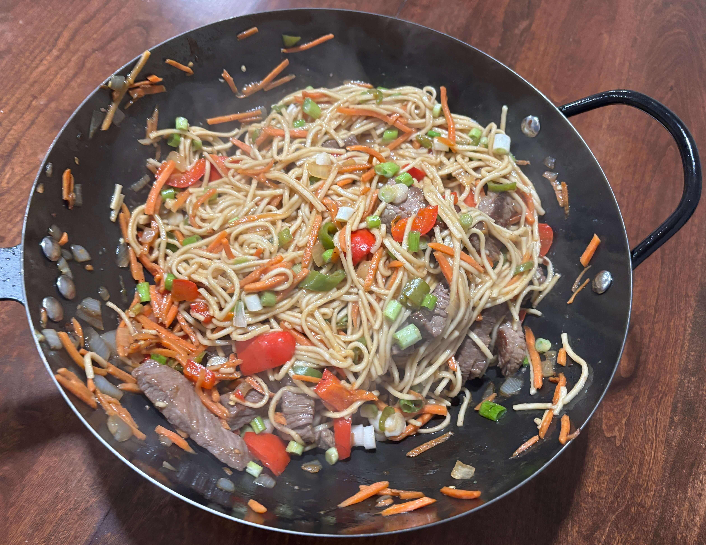

Home
Spicy Beef Lomein

2-3 servings
35 mins
Ingredients
- 1/2lb (200g) lo mein noodles, fresh or parcooked
- Neutral oil as needed for stir frying
- A spoonful & 10g light soy sauce
- (3g) A sprinkle of sugar
- (2g) A pinch of baking soda
- (10g) A spoonful of cornstarch
- (10g) A spoonful chili crisp oil
- (5g) Beef bouillion paste
- 1/2lb (200g) Beef sirloin, thinly sliced
- 50g oyster sauce
- 10g dark soy sauce
- 1 diced shallot
- jalepenos sliced to taste
- 1/2 bell pepper sliced
- 1 julienned carrot
- 1 handful sliced mushrooms
- Scallions for garnish
Steps
- Bring a pot of water to a boil and cook the noodles to the lower end of the package instructions. You want them slightly underdone—they'll finish cooking in the sauce. Drain and set aside. Meanwhile, thinly slice the beef against the grain into bite-sized flat pieces.
- Add the sliced beef to a bowl with soy sauce, sugar, baking soda, chili crisp, and cornstarch. Mix until evenly coated and slightly sticky. This velveting style marinade helps tenderize the beef & create more browning during stir-frying.
- Combine oyster sauce, light soy sauce, dark soy sauce, and beef bouillon in a bowl. Taste and adjust if needed (it should be deeply savory to flavor the whole dish and stand up to the beef).
- Heat oil in a wok over high heat. Add the beef in a single layer and sear until browned and just cooked through. Work in batches if needed to avoid overcrowding. Remove and set aside.
- Add a bit more oil if needed, then add the shallot & chilies to bloom for about a minute or until fragrant. Then, add the carrots, peppers, and mushrooms and stir-fry until softened
- Add noodles and sauce. Toss until glossy and evenly coated. Return the beef and mix to combine. Finish with green onions at the end for freshness.